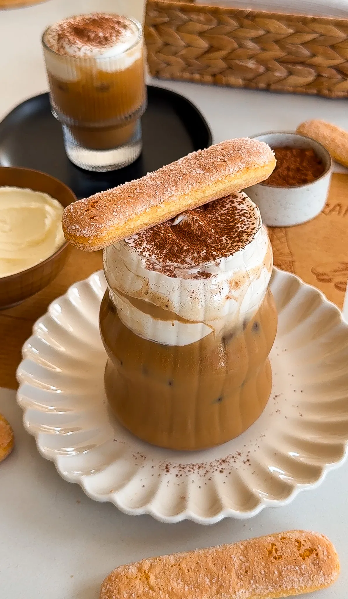

Drinks
TIRAMISU LATTE
Prep Time: 10 minutes
Total Time: 10 minutes
Yields: 2
If you love tiramisu, this latte will easily become your fave way
to caffeinate! Sweet espresso, creamy milk, and a velvety
mascarpone foam come together for a sip that’s pure indulgence.
Whether hot or iced, it’s like treating yourself to dessert—but in
drinkable form!
Jump To Recipe
Drinks
TIRAMISU LATTE
Prep Time: 10 minutes
Total Time: 10 minutes
Yields: 2
If you love tiramisu, this latte will easily become your fave way
to caffeinate! Sweet espresso, creamy milk, and a velvety
mascarpone foam come together for a sip that’s pure indulgence.
Whether hot or iced, it’s like treating yourself to dessert—but in
drinkable form!
Print Recipe
Pin Recipe
INGREDIENTS
FOR THE ESPRESSO:
-
4 shots espresso
-
2 to 4 tablespoons brown sugar or chocolate mocha sauce
SWEET FOAM
-
1/2 cup heavy cream
-
1/4 cup mascarpone cheese
-
2 tablespoons simple syrup
-
1 teaspoon vanilla extract
FOR THE LATTE:
-
1 to 2 cups milk (whole milk or preferred milk)
-
ice (for iced version)
-
cocoa powder or chocolate shavings (optional, for garnish)
-
lady fingers, optional
INGREDIENTS
PREPARE ESPRESSO:
-
Brew 4 shots of espresso, 2 per drink. For a stronger drink,
brew 3 shots of espresso per drink.
-
While still hot, stir in brown sugar or mocha sauce to your
desired sweetness until fully dissolved. Set aside.
MAKE TIRAMISU FOAM:
-
In a mixing bowl or using a handheld frother, combine 1/4 cup
heavy cream, 2 tablespoons mascarpone cheese, 1 tablespoon
simple syrup, and 1/2 teaspoon vanilla extract.
-
Whip until the mixture thickens slightly, forming a soft,
pourable foam.
HOT LATTE:
-
Heat 1 cup of milk until steaming, but do not let it boil.
Froth if desired.
-
Pour the sweetened espresso into a mug.
-
Add the steamed milk, filling the mug almost to the top.
-
Spoon the sweet foam generously over the top.
-
Sprinkle with cocoa powder or chocolate shavings if desired.
ICED LATTE:
- Fill a glass with ice.
-
Pour 1 cup of cold milk over the ice, leaving room for the
espresso.
-
Slowly pour the sweetened espresso over the milk to create a
layered effect.
-
Top with the sweet foam, letting it cascade over the ice.
-
Finish with a dusting of cocoa powder or chocolate shavings
if desired.